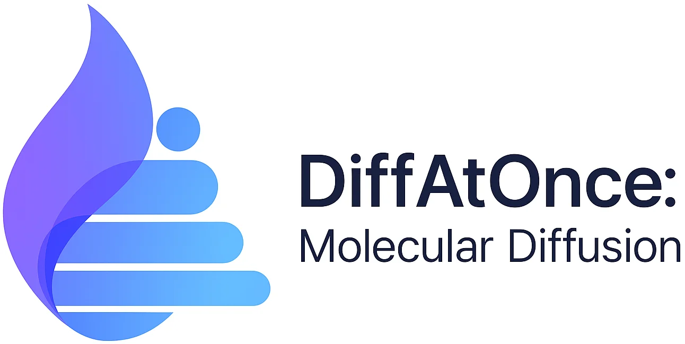
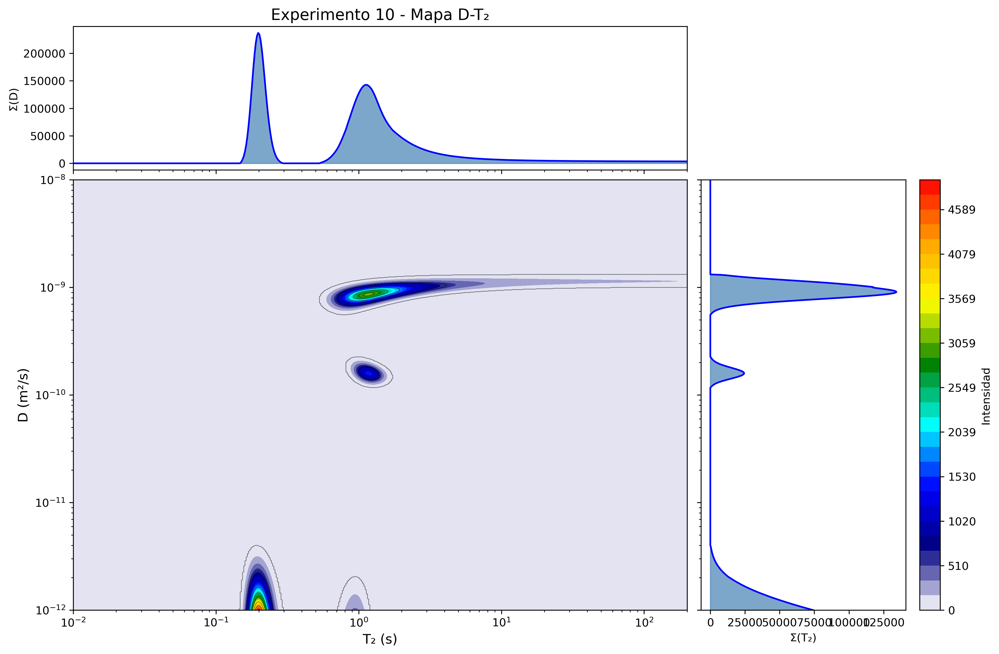

LA PREGUNTA
QUÉ REPRESENTA EL MODELO

DIFFUSION MOTION LABDEL MOVIMIENTO AL MAPA
Explora lo que sucede entre un gradiente y un mapa DOSY. Cambia los parámetros. Observa dónde se pierde información.
SIMULACIONES CALCULADAS · v2
RESULTADOS DEL MODELO
LA PREGUNTA
QUÉ REPRESENTA EL MODELO
Exporta la escena o su señal sintética.

Figura aportada previamente por el usuario. Es un resultado histórico, distinto de estas simulaciones y de la validación del prototipo actual.
Procedencia de la imagen